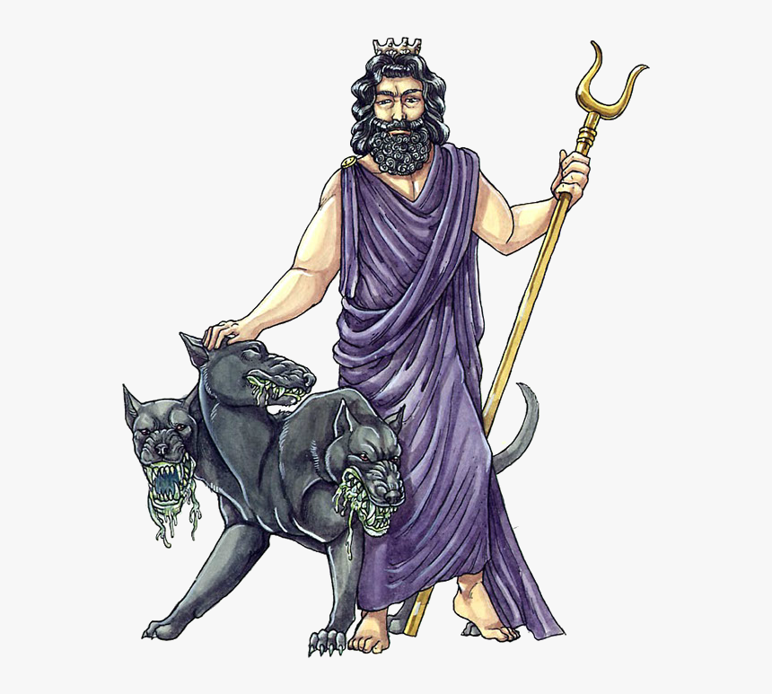

As the lord of the dead, Hades was greatly feared by the Greeks, and he had few temples or shrines dedicated to him. He was married to the goddess Persephone, the daughter of Zeus and Demeter. Hades symbols were the cornucopia, a sceptre, the cypress, narcissus, poplar and his Helm of Darkness; the screech owl was his sacred animal. His sacred fruit was the pomegranate, the fruit that Persephone ate three-thirds of when she was kidnapped and in the underworld. Hades Roman equivalent was Pluto, whose name is merely a Latinization of the Greek Plouton.